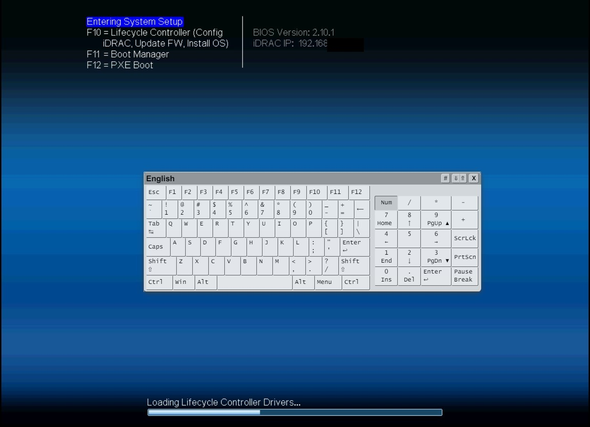
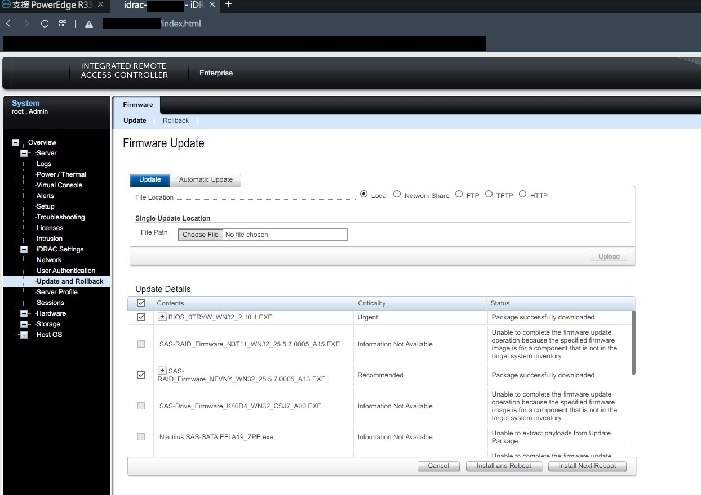
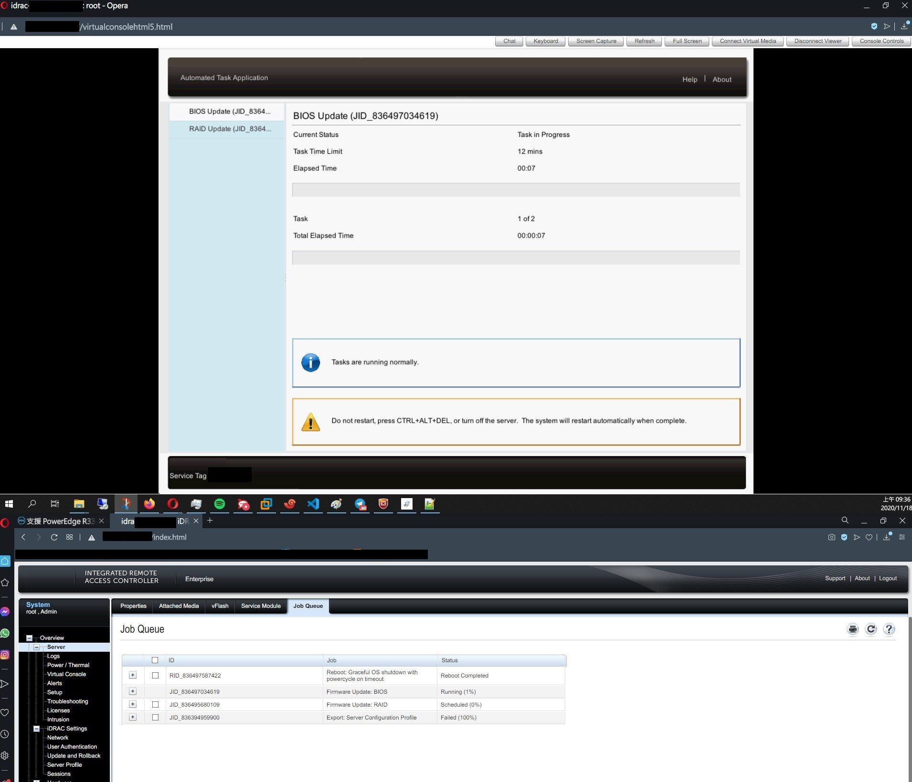
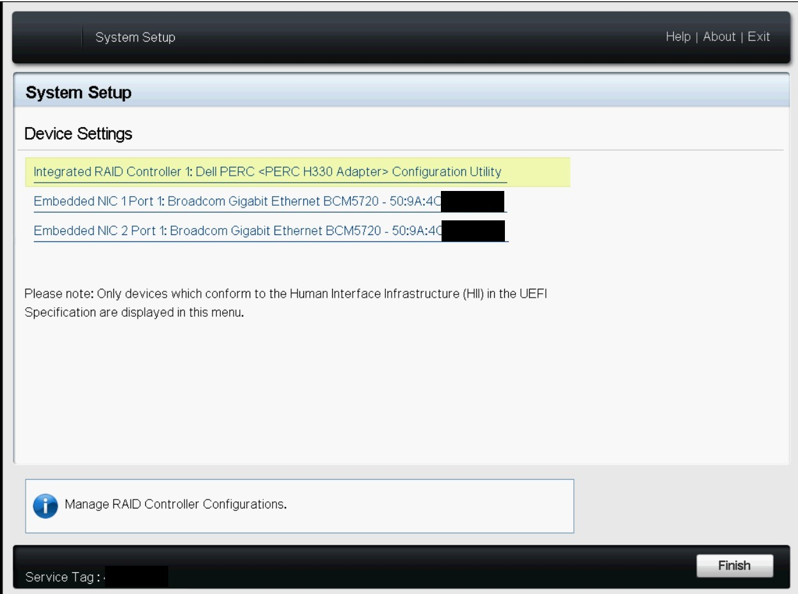

清除 Dell Server BIOS,iDRAC 密碼與設定值 + 更新 Driver + 建立 RAID
Contents
使用機型 Dell R330
BIOS,iDRAC 密碼/設定檔 清除
How to reset the BIOS of a Dell PowerEdge Server?
-
將所有電源移除
-
將 NVRAM_CLR 從本來的 pins 3-5 變成 pins 1-3 (如上圖)，PWD_EN 直接拔除
-
等待十秒鐘以上 重新接上電源並開機 按 F2 進入 System Setting

-
進入 System BIOS
-
選擇 Default
-
選擇 iDRAC Setting 拉到最下面 Reset iDRAC configurations to defaults
-
將 NVRAM_CLR 復歸到 pings 3-5，PWD_EN 重新插上 pings 2-4
-
拔除電源後重新開機
iDRAC 設定
如果沒有 iDRAC License 可以從 Dell 官網抓取試用授權
Dell iDRAC Trial
▲ 進入 iDRAC Setting
▲ 選擇 Network
▲ 設定 IP
▲ 設定 root 密碼
更新驅動程式 Driver
2021.01.29 更新: iDrac 務必先行更新! 不然有機率遇到 UEFI pre-boot 錯誤
請依照官方建議的更新順序，避免踩雷!!
請依照官方建議的更新順序，避免踩雷!!
建議更新順序
- iDRAC (現在都與 Lifecycle Controller 包在一起)
- BIOS
- Diagnostics。 診斷程式
- OS Driver Pack。 OS 驅動程式
- RAID 卡驅動
- NIC
請依照官方建議的更新順序，避免踩雷!!
請依照官方建議的更新順序，避免踩雷!!
▲ 登入 iDRAC，iDRAC Setting > Update and Rollback，上傳更新檔案



▲ 更新中
RAID 控制器
▲ 進入 Device Settings

▲ 選擇 RAID Controller 也就是 RAID 控制器
▲ Configuration Management
▲ Clear Configuration 清除硬碟上的 RAID 設定檔
▲ 轉換成 RAID 可用，會將存在硬碟上的 DATA 清除!!
▲ 完成之後重新進入會多出 Virtual Disk 的選項
▲ 設定 RAID
▲ Select Physical Disks
▲ 最後按下 Create Virtual Disk
▲ 完成
Author 老柯
LastMod 2022-07-06 (ed12cc1)